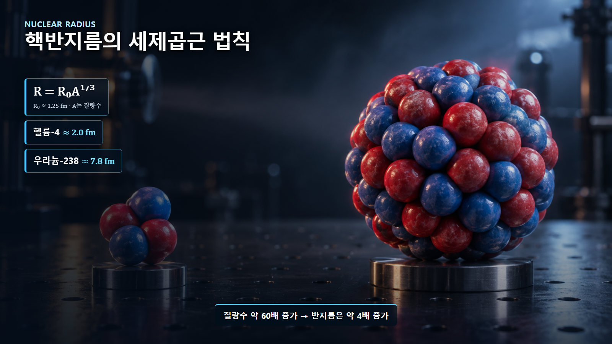

원자와 원자핵의 기초 · 002
원자와 원자핵의 크기
전자구름과 원자핵 사이의 10만 배 길이척도
핵심 개념
원자의 반지름은 원자핵 반지름보다 대표적으로 약 10만 배 큽니다. 핵은 극히 작지만 원자 질량의 거의 전부가 모인 중심입니다.
서로 다른 길이척도
대부분 원자의 반지름은 약 10⁻¹⁰ m이고, 원자핵은 약 10⁻¹⁵~10⁻¹⁴ m 규모입니다. 대표값을 비교하면 원자의 반지름은 원자핵 반지름보다 약 10만 배 큽니다. 길이비가 10만 배이면 부피비는 약 10¹⁵배가 됩니다.
경기장과 작은 알갱이의 비유
원자를 지름 100 m인 경기장으로 확대하면 원자핵은 중앙의 약 1 mm 알갱이에 해당합니다. 경기장 나머지를 단단한 물질이 채우는 것이 아니라 전자가 발견될 확률이 공간에 퍼져 있습니다. 이 비유는 크기 차이를 설명하지만 전자가 행성처럼 고정된 궤도를 돈다는 뜻은 아닙니다.
| 비교 대상 | 대표 길이척도 | 100 m 확장 비유 |
|---|---|---|
| 원자·전자구름 | 약 10⁻¹⁰ m | 경기장 전체 |
| 원자핵 | 약 10⁻¹⁵ m | 중앙의 약 1 mm 알갱이 |
| 길이 관계 | 약 10만 대 1 | 100 m 대 1 mm |
핵반지름의 질량수 의존성
핵반지름은 대략 R=R₀A¹ᐟ³으로 나타냅니다. A는 질량수이고 R₀는 약 1.25 fm입니다. 단순식으로 헬륨-4 핵은 약 2.0 fm, 우라늄-238 핵은 약 7.8 fm입니다. 질량수는 약 60배 차이지만 반지름은 약 4배만 커집니다.
